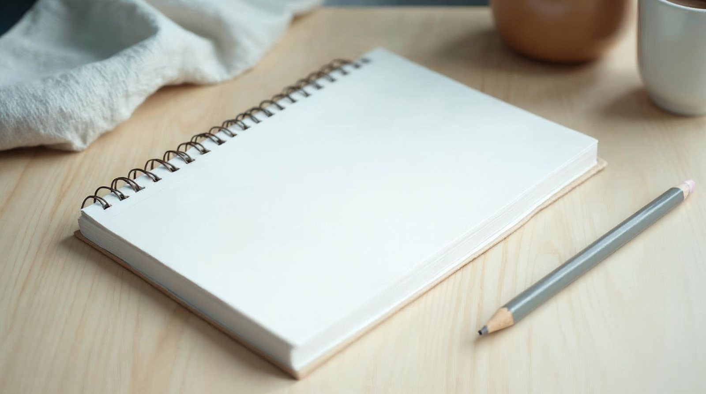
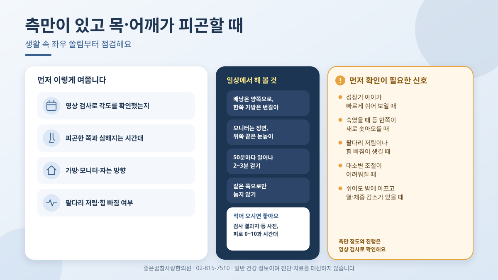

이종호 한의사 감수좋은꿈참사랑한의원 대표원장 (한의사 면허번호 19769)발행 2026-11-25 · 수정 2026-11-25
이 글의 차례
척추측만증이 있다는 이야기를 들은 분들 중에는 허리보다 오히려 목과 어깨가 자주 무겁고 피곤하다고 말씀하시는 경우가 많습니다. 척추가 옆으로 휘어 있으면 몸은 머리와 눈높이를 수평으로 맞추기 위해 한쪽 목과 어깨 근육을 더 쓰게 되기 쉽고, 여기에 한쪽으로만 메는 가방, 높이가 맞지 않는 모니터, 한쪽으로 기대는 습관이 겹치면 피로가 더 쌓입니다.
측만 자체를 생활 습관으로 바꾸기는 어렵지만, 매일 반복되는 쏠림을 줄이면 목과 어깨가 떠안는 부담은 덜어 볼 수 있습니다. 그래서 먼저 생활 속 좌우 쏠림을 하나씩 점검합니다. 다만 성장기에 휘는 정도가 빨리 달라지거나 팔다리 저림, 힘 빠짐이 함께 있다면 생활 점검보다 영상 검사로 확인하는 것이 먼저입니다.
왜 측만이 있으면 목·어깨가 쉽게 피곤할까요
- 척추가 옆으로 휘면 그 위에 얹힌 갈비뼈와 날개뼈의 위치도 좌우가 조금씩 달라집니다. 그 결과 한쪽 어깨가 높거나 앞으로 말려 보이고, 날개뼈 주변 근육이 양쪽에서 서로 다른 길이로 버티게 됩니다.
- 사람의 몸은 눈높이를 수평으로 맞추려는 성질이 있어, 아래쪽이 기울어 있으면 목이 반대 방향으로 살짝 기울거나 돌아가 균형을 맞추려 합니다. 이 상태로 하루 종일 지내면 목 옆과 어깨 위쪽 근육이 쉬지 못하고 계속 일하는 셈이 됩니다.
- 측만이 있다고 모든 분이 목과 어깨가 피곤한 것은 아니고, 휜 정도와 피로의 정도가 꼭 비례하지도 않습니다. 각도가 크지 않아도 생활 습관이 한쪽으로 쏠려 있으면 불편이 클 수 있고, 그 반대인 경우도 있습니다.
- 앉아서 오래 일하거나 공부하면 머리가 앞으로 나오는 자세가 더해져 목 뒤쪽 부담이 커집니다. 측만으로 생긴 좌우 차이에 앞뒤 차이까지 겹치는 셈입니다.
- 자세 때문에 잠시 휘어 보이는 경우(기능성)와 척추 자체가 휘고 돌아가 있는 경우(구조성)는 다릅니다. 앞으로 숙였을 때 등 한쪽이 더 솟아오르는지 같은 단서가 있지만, 실제 구분과 각도 확인은 X선 같은 영상 검사로 합니다.
- 목과 어깨 피로를 모두 측만 때문이라고 보기도 어렵습니다. 눈의 피로, 긴장하면 어깨에 힘이 들어가는 습관, 얕은 잠, 맞지 않는 베개 높이처럼 다른 이유가 함께 있는 경우가 많습니다.
- 한의학에서는 한쪽으로만 뭉치고 피로가 쌓이는 모습을 기운과 혈이 고르게 돌지 못하는 모습과 함께 살피기도 합니다. 그래서 목과 어깨만이 아니라 잠, 소화, 손발이 찬 정도, 마음의 긴장도 함께 여쭙습니다.
자주 하는 오해
- "측만이 있으니 목·어깨가 피곤한 것은 어쩔 수 없다"고 여기기 쉽지만, 생활에서 반복되는 쏠림을 줄이면 피로를 덜 느끼는 데 도움이 될 수 있습니다.
- 반대로 자세만 바르게 하면 측만이 펴진다고 기대하기도 합니다. 구조성 측만은 자세를 바꾼다고 각도가 바로 달라지지 않으며, 생활 점검의 목표는 목과 어깨의 부담을 줄이는 쪽에 둡니다.
- 휜 쪽만 집중해서 늘이고 반대쪽만 강하게 운동해야 한다고 생각하는 분도 있습니다. 측만의 모양은 사람마다 달라 어느 쪽을 어떻게 써야 할지 일반 공식으로 정하기 어렵고, 무리하게 한쪽만 운동하면 다른 곳에 부담이 생길 수 있습니다.
- 성인이 되면 측만은 더 이상 신경 쓸 필요가 없다고 여기기도 합니다. 성장이 끝난 뒤에는 대개 빠르게 진행하지 않는 것으로 알려져 있지만, 나이가 들며 허리 쪽 변화와 함께 불편이 생기는 경우도 있어 가끔 상태를 살펴보는 편이 좋습니다.
상황별 예시
- 예를 들어 듀얼 모니터를 쓰는 30대 직장인이 주로 보는 화면을 오른쪽에 두고 하루 종일 고개를 오른쪽으로 돌린 채 일하면서, 마우스도 멀리 두고 팔을 뻗고 있는 경우입니다. 측만으로 원래 한쪽 어깨가 높은데 고개 돌림까지 겹치면 같은 쪽 목이 저녁마다 뻣뻣해지기 쉽습니다. 주로 보는 화면을 몸 정면으로 옮기고 마우스를 몸 가까이 당기는 것부터 해 봅니다.
- 예를 들어 노량진 학원가에서 하루 열 시간 넘게 앉아 공부하는 수험생이 늘 같은 쪽 팔꿈치를 책상에 괴고 몸을 기울인 채 문제를 푸는 경우입니다. 의자 높이와 책 거치대 높이를 맞추고, 50분 공부 뒤에는 일어나 2~3분 걷는 시간을 정해 두는 것이 출발점입니다.
- 예를 들어 키가 빠르게 크는 중학생 자녀가 학교 검진에서 측만 의심 이야기를 들었고, 무거운 책가방을 한쪽 어깨에만 걸치고 다니는 경우입니다. 이때는 생활 점검과 함께 영상 검사가 가능한 의료기관에서 휘는 정도를 먼저 확인하고, 안내받은 간격으로 다시 확인하는 일을 놓치지 않는 것이 우선입니다.
- 예를 들어 60대 어르신이 젊을 때부터 측만이 있었는데 최근 몇 해 사이 허리가 더 한쪽으로 기우는 느낌이 들고, 오래 걸으면 다리가 저려 쉬었다 가야 하는 경우입니다. 목과 어깨 피로보다 허리와 다리 신경 쪽 확인이 먼저 필요할 수 있어 영상 검사부터 권합니다.
먼저 이렇게 여쭙니다
- 측만은 언제, 어디서 알게 되었고 영상 검사로 각도를 확인한 적이 있는지 여쭙니다.
- 목과 어깨 중 어느 쪽이 더 피곤한지, 하루 중 언제 심해지는지 여쭙니다.
- 가방은 어느 쪽으로 메는지, 책상과 모니터는 어떻게 놓여 있는지 여쭙니다.
- 앉을 때 한쪽으로 기대거나 다리를 꼬는 습관, 잘 때 주로 눕는 방향을 여쭙니다.
- 어떤 운동을 하는지, 골프나 테니스처럼 한쪽으로 휘두르는 운동을 오래 했는지 여쭙니다.
- 팔이나 다리에 저림, 힘 빠짐이 있는지, 숨이 차는 일은 없는지 여쭙니다.
- 청소년이라면 최근 1년 동안 키가 얼마나 컸는지 보호자와 함께 여쭙니다.
- 잠, 소화, 두통, 눈의 피로처럼 몸 전체의 상태도 함께 여쭙니다.
생활 속 쏠림, 다섯 가지를 점검해 보세요
가방 메는 쪽
- 한쪽 어깨로 메는 가방이나 크로스백을 늘 같은 방향으로 메는지 확인합니다.
- 한쪽 어깨가 원래 높은 분은 가방끈이 낮은 쪽 어깨에서 자꾸 흘러내려 높은 쪽에만 메게 되는 경우가 많습니다. 끈이 흘러내리는 쪽이 어디인지도 적어 둡니다.
- 가방을 저울에 올려 무게를 재 봅니다. 노트북과 책, 물병까지 넣으면 생각보다 무거운 경우가 많습니다.
책상과 모니터 높이
- 의자에 깊숙이 앉았을 때 발바닥 전체가 바닥에 닿고 무릎이 엉덩이와 비슷한 높이인지 봅니다.
- 모니터 위쪽 끝이 눈높이와 비슷하거나 조금 낮고, 화면 가운데가 몸 정면에 있는지 확인합니다. 노트북만 쓴다면 거치대와 따로 쓰는 키보드를 함께 생각해 봅니다.
- 서류나 책을 한쪽 옆에 두고 고개를 돌려 보는지, 휴대폰을 무릎 위에 두고 고개를 푹 숙여 보는지도 점검합니다.
한쪽으로 기대는 습관
- 의자 팔걸이 한쪽에 늘 기대는지, 소파에서 같은 쪽으로만 비스듬히 눕는지 봅니다.
- 서 있을 때 체중을 싣는 다리, 다리를 꼬는 방향이 늘 같은지 확인합니다.
- 전화를 받을 때 휴대폰을 어깨와 귀 사이에 끼우는 습관도 한쪽 목을 오래 긴장시킵니다.
잠자는 자세
- 늘 같은 쪽으로만 옆으로 누워 자는지, 엎드려 고개를 한쪽으로 돌린 채 자는지 봅니다.
- 반듯이 누웠을 때 베개가 너무 높아 턱이 가슴 쪽으로 당겨지지 않는지, 옆으로 누웠을 때 베개가 낮아 머리가 아래로 처지지 않는지 확인합니다.
- 아침에 일어났을 때 목이 더 뻣뻣한 쪽이 있는지 적어 둡니다.
운동할 때 좌우 차이
- 골프, 테니스, 배드민턴처럼 한쪽으로 휘두르는 운동을 일주일에 여러 번 하는지 확인합니다.
- 헬스를 한다면 한쪽 팔씩 드는 동작에서 좌우 무게나 횟수 차이가 있는지, 한쪽만 먼저 지치는지 봅니다.
- 걸을 때 한쪽 팔만 흔들리거나 신발 밑창이 한쪽만 빨리 닳는지도 단서가 됩니다.
스스로 점검해 보세요
- 목이나 어깨가 피곤한 쪽이 늘 같은 쪽이다.
- 가방을 늘 같은 어깨로 메거나 한쪽 끈이 자꾸 흘러내린다.
- 모니터나 책이 몸 정면이 아니라 한쪽에 놓여 있다.
- 앉으면 한쪽 팔걸이에 기대거나 다리를 늘 같은 방향으로 꼰다.
- 잠은 늘 같은 쪽으로 누워 자거나 엎드려 잔다.
- 한쪽으로 휘두르는 운동을 일주일에 여러 번 한다.
- 오후가 되면 두통이나 눈의 피로가 함께 온다.
- 팔이나 손, 다리에 저림이나 힘 빠짐은 없다.
해당하는 항목이 많을수록 생활에서 바꿔 볼 거리가 많다는 뜻입니다. 다만 마지막 항목과 달리 저림이나 힘 빠짐이 있다면 생활 점검보다 확인이 먼저입니다.
일상에서 먼저 해 볼 수 있는 것
아침 3분(일어나서 세수하기 전)
- 침대 가장자리에 앉아 숨을 천천히 다섯 번 쉬며, 어깨를 귀 쪽으로 올렸다가 힘을 빼고 툭 떨어뜨립니다.
- 턱을 살짝 뒤로 당겨 뒷목을 길게 하는 동작을 5초씩 다섯 번 합니다.
- 고개를 좌우로 천천히 기울여 각각 15초씩 머물고, 어느 쪽이 더 당기는지 기억해 둡니다. 당기는 쪽만 억지로 더 늘리기보다 양쪽을 같은 시간 동안 합니다.
일하거나 공부하는 동안(50분마다 2~3분)
- 타이머를 50분에 맞추고, 울리면 일어나 물을 한 잔 마시며 복도를 한 바퀴 걷습니다.
- 자리로 돌아와 앉기 전에 양쪽 날개뼈를 등 가운데로 모으듯 5초씩 다섯 번 당깁니다.
- 앉은 자세를 다시 맞춥니다. 엉덩이를 의자 깊숙이 넣고, 양발을 바닥에 나란히 두고, 화면이 정면에 있는지 확인합니다.
가방과 이동
- 한쪽 어깨 가방은 양쪽 어깨에 메는 배낭으로 바꾸고, 끈 길이를 맞춰 가방이 등 가운데에 붙도록 합니다.
- 바꾸기 어렵다면 하루씩 메는 쪽을 번갈아 정하고, 꼭 필요한 물건만 넣어 무게를 줄입니다.
- 장을 볼 때는 봉투를 양손에 나눠 듭니다.
저녁 10분(씻은 뒤)
- 따뜻한 샤워로 목과 어깨를 데운 뒤 벽에 등을 대고 서서 뒤통수, 날개뼈, 엉덩이가 벽에 닿는지 봅니다. 억지로 붙이려 하지 말고 편안히 숨 쉬며 1분 머뭅니다.
- 바닥에 누워 무릎을 세우고, 숨을 들이쉴 때 갈비뼈 양옆이 부푸는 느낌을 손을 대고 느껴 봅니다. 한쪽이 덜 움직이는 느낌이 있어도 억지로 맞추지 말고 천천히 다섯 번 숨 쉽니다.
- 낮 동안 걷기처럼 몸을 양쪽 고르게 쓰는 운동을 20~30분 해 두면 저녁의 뻐근함을 비교하기 쉽습니다.
잠자리
- 반듯이 누울 때는 목 아래 빈 곳을 채우는 정도의 베개, 옆으로 누울 때는 어깨 너비만큼 머리를 받쳐 주는 높이를 고릅니다.
- 늘 같은 쪽으로만 눕는다면 잠들 때만이라도 반대쪽이나 반듯이 누워 시작해 봅니다.
- 엎드려 자는 습관은 목을 한쪽으로 오래 돌리게 하므로 가능하면 줄여 봅니다.
운동
- 한쪽으로 휘두르는 운동을 한다면 시작 전 5분은 양쪽을 고르게 푸는 시간을 갖고, 끝난 뒤에는 반대 방향으로도 가볍게 몇 번 휘둘러 봅니다.
- 측만의 정도와 모양에 따라 맞는 운동이 다를 수 있어, 진단받은 의료기관에서 들은 주의 사항을 먼저 따릅니다.
한의원에서 함께 살필 수 있는 경우
- 측만 진단을 받은 뒤 목과 어깨가 한쪽만 자주 뭉치고 피곤한 경우
- 오래 앉아 일하거나 공부하면서 목, 어깨, 날개뼈 사이가 함께 뻐근한 경우
- 생활에서 무엇부터 바꿔야 할지 자세와 습관 점검을 함께 받고 싶은 경우
- 목과 어깨 피로와 함께 잠이 얕고 두통, 소화 불편이 이어지는 경우
추나 상담에서는 먼저 측만을 언제 알게 되었는지, 영상 검사 결과와 각도 기록이 있는지 확인합니다. 아직 검사를 받지 않았다면 영상 검사가 가능한 의료기관 진료를 함께 권합니다. 이어서 맥부터 짚어 잠과 피로, 긴장된 정도처럼 몸 전체의 리듬을 살핍니다.
그다음 서 있는 자세를 앞과 뒤, 옆에서 보며 양쪽 어깨와 날개뼈 높이, 골반 높이, 머리가 기운 방향을 확인합니다. 발이 체중을 어떻게 받치는지, 한쪽 발에 체중이 더 실리는지, 평소 신는 신발 밑창이 어느 쪽으로 닳는지도 함께 봅니다. 고개를 돌리고 기울이는 범위를 양쪽 비교하고, 목과 어깨, 등 근육을 눌러 예민한 자리를 찾습니다.
좋은꿈참사랑한의원에서는 이렇게 본 내용을 바탕으로 생활에서 바꿀 순서를 먼저 정하고, 필요하다고 판단될 때 연령과 측만 정도, 몸 상태에 맞춰 추나나 침 등을 신중하게 정합니다. 측만 각도가 달라진다고 말씀드리지 않으며, 목과 어깨의 긴장과 움직임의 불편을 살피는 데 목표를 둡니다.
다음 진료에서는 지난번 정한 생활 점검이 어땠는지, 피곤한 시간대가 달라졌는지부터 이어서 여쭙습니다.
얼마나 지켜보고 언제 상담할까요
- 점검 목록에서 한두 가지를 골라 2~4주 바꿔 보며, 목과 어깨 피로를 하루 0~10으로 적어 비교해 봅니다.
- 습관을 바꿔도 피로가 계속되고 두통이나 잠 문제까지 이어진다면 상담을 받아 함께 살펴보시길 권합니다.
- 청소년은 증상이 없어도 영상 검사로 측만을 확인했다면 안내받은 간격에 맞춰 다시 확인합니다. 성장기에는 짧은 기간에도 휘는 정도가 달라질 수 있습니다.
- 성인이라도 한 해에 한 번쯤 같은 자세로 등 사진을 찍어 두고, 모양이 눈에 띄게 달라졌다면 영상 검사로 다시 확인합니다.

이렇게 기록해 오시면 상담이 쉬워집니다
- 영상 검사 결과지와 각도 기록, 검사한 날짜(이전 결과가 있으면 함께)
- 같은 자세로 찍은 등 사진(앞에서, 뒤에서)
- 목·어깨 피로가 심한 쪽과 시간대, 하루 0~10 점수
- 가방 종류와 메는 쪽, 책상·모니터 배치를 찍은 사진
- 주로 자는 방향과 베개 높이, 즐겨 하는 운동
- 저림, 힘 빠짐, 두통 여부와 복용 중인 약
- 청소년이라면 최근 1년 키 변화
이런 증상은 먼저 확인이 필요합니다
- 키가 빠르게 크는 시기의 아이나 청소년에게 측만이 의심되거나, 몇 달 사이 어깨·허리선 차이가 눈에 띄게 커진 경우
- 앞으로 숙였을 때 등 한쪽이 솟아오르는 모습이 새로 보이거나 점점 뚜렷해지는 경우
- 팔이나 다리에 저림, 힘 빠짐이 생기거나 걸을 때 다리가 자꾸 끌리는 경우
- 대소변 조절이 어려워지거나 사타구니 주변 감각이 둔해진 경우
- 누워서 쉬어도 가라앉지 않는 통증이 밤에 심해지고, 열이나 체중 감소가 함께 있는 경우
- 계단을 오르거나 조금만 움직여도 숨이 차는 일이 늘어난 경우
- 성인이 된 뒤 허리가 한쪽으로 더 기우는 느낌과 함께, 오래 걸으면 다리가 저려 쉬어야 하는 경우
대소변 조절이 갑자기 어려워지거나 다리 힘이 빠르게 빠지면 지체하지 말고 응급실이 있는 병원을 찾거나 가까운 응급실로 가세요. 복용 중인 약은 처방한 의사와 상의 없이 줄이거나 끊지 않습니다.
관련 글
- 척추가 한쪽으로 휜 것 같을 때(측만 의심) 어떤 점을 살펴보나요?
- 어깨 높이가 양쪽이 다른 것 같을 때는 어떤 점을 살펴보나요?
- 베개 높이가 맞지 않으면 목과 어깨는 어떻게 되나요?

여쭙는 것
- 측만은 언제, 어디서 알게 되었고 영상 검사로 각도를 확인한 적이 있는지 여쭙니다.
- 목과 어깨 중 어느 쪽이 더 피곤한지, 하루 중 언제 심해지는지 여쭙니다.
- 가방은 어느 쪽으로 메는지, 책상과 모니터는 어떻게 놓여 있는지 여쭙니다.
생활에서 해 볼 것
- 침대 가장자리에 앉아 숨을 천천히 다섯 번 쉬며, 어깨를 귀 쪽으로 올렸다가 힘을…
- 턱을 살짝 뒤로 당겨 뒷목을 길게 하는 동작을 5초씩 다섯 번 합니다.
- 고개를 좌우로 천천히 기울여 각각 15초씩 머물고, 어느 쪽이 더 당기는지 기억해…
한의원에서 함께 살필 것
- 측만 진단을 받은 뒤 목과 어깨가 한쪽만 자주 뭉치고 피곤한 경우
- 오래 앉아 일하거나 공부하면서 목, 어깨, 날개뼈 사이가 함께 뻐근한 경우
- 생활에서 무엇부터 바꿔야 할지 자세와 습관 점검을 함께 받고 싶은 경우
먼저 확인이 필요한 신호
- 키가 빠르게 크는 시기의 아이나 청소년에게 측만이 의심되거나, 몇 달 사이 어깨·허…
- 앞으로 숙였을 때 등 한쪽이 솟아오르는 모습이 새로 보이거나 점점 뚜렷해지는 경우
- 팔이나 다리에 저림, 힘 빠짐이 생기거나 걸을 때 다리가 자꾸 끌리는 경우
한눈에 보는 표
| 구분 | 핵심 |
|---|---|
| 여쭙는 것 | 측만은 언제, 어디서 알게 되었고 영상 검사로 각도를 확인한 적이 있는지 여쭙니다. 목과 어깨 중 어느 쪽이 더 피곤한지, 하루 중 언제 심해지는지 여쭙니다. |
| 생활에서 해 볼 것 | 침대 가장자리에 앉아 숨을 천천히 다섯 번 쉬며, 어깨를 귀 쪽으로 올렸다가 힘을 빼고 툭 떨어뜨립니다. 턱을 살짝 뒤로 당겨 뒷목을 길게 하는 동작을 5초씩 다섯 번 합니다. |
| 한의원에서 함께 살필 것 | 측만 진단을 받은 뒤 목과 어깨가 한쪽만 자주 뭉치고 피곤한 경우 오래 앉아 일하거나 공부하면서 목, 어깨, 날개뼈 사이가 함께 뻐근한 경우 |
| 먼저 확인이 필요한 신호 | 키가 빠르게 크는 시기의 아이나 청소년에게 측만이 의심되거나, 몇 달 사이 어깨·허리선 차이가 눈에 띄게 커진 경우 앞으로 숙였을 때 등 한쪽이 솟아오르는 모습이 새로 보이거나 점점 뚜렷해지는 경우 |
자주 묻는 질문
추나를 받으면 측만이 펴지나요?
측만 각도가 달라진다고 말씀드리지 않습니다. 측만의 정도와 진행 여부는 영상 검사로 확인하고, 추나 상담에서는 목과 어깨의 긴장, 움직임의 불편과 생활 속 쏠림을 함께 살핍니다.
측만이 있어도 추나를 받을 수 있나요?
측만 정도와 연령, 통증 상태, 이전 검사 결과를 확인한 뒤 필요하다고 판단될 때 세기를 낮춰 신중하게 정합니다. 결과지를 가져오시면 상담이 구체적이 됩니다.
가방은 어떤 것을 메는 것이 좋나요?
양쪽 어깨에 메는 배낭을 끈 길이를 맞춰 등에 붙게 메는 방법을 권합니다. 한쪽 가방을 써야 한다면 메는 쪽을 번갈아 바꾸고 무게를 줄여 보세요.
어떤 운동을 하면 좋을까요?
걷기처럼 양쪽을 고르게 쓰는 운동부터 권합니다. 측만의 모양과 정도에 따라 조심할 동작이 달라질 수 있어 진단받은 의료기관의 안내를 먼저 따르고, 불편한 동작은 상담 때 함께 이야기합니다.
청소년 자녀도 함께 상담받을 수 있나요?
보호자와 함께 오시면 됩니다. 성장기에는 영상 검사로 휘는 정도를 먼저 확인하는 것이 우선이어서 검사가 가능한 의료기관 진료를 함께 권하고, 앉는 자세와 책가방, 잠 습관처럼 생활을 함께 살핍니다.
좋은꿈참사랑한의원은 재진 때 지난번 이야기부터 이어서 여쭙니다. 진료시간과 예약은 오시는 길에서 확인하세요.
어디서 상담받을 수 있나요?
좋은꿈참사랑한의원은 서울 동작구 만양로2길 2 신성빌딩 3층·5층(서울 동작구 상도동, 7호선 상도역 3번 출구 근처)에 있습니다. 한의사 3명(이종호 대표원장, 조영기 수석진료원장, 정원영 진료원장)이 진료합니다. 진료시간은 평일 09:30~20:00(점심 13:00~14:00), 토·일·공휴일 09:30~15:00이며, 방문 전 전화로 확인을 권합니다. 예약은 네이버 예약, 카카오톡 상담, 전화 02-815-7510로 받습니다.
이 글은 일반적인 건강 정보이며 개인의 진단이나 치료를 대신하지 않습니다. 증상이 있거나 복용 중인 약이 있다면 진료를 통해 확인하세요. 치료 효과는 개인마다 다를 수 있습니다.
작성 기준: 일반적으로 알려져 있는 건강 정보를 참고해 정리했습니다(대표원장 감수). 증상 기록은 1~2주 동안 하루 1회, 비슷한 시간에 적어 오시면 지난 상태와 비교하기 쉽습니다.